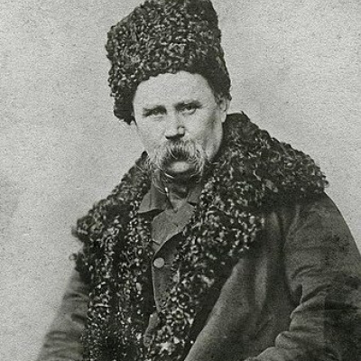
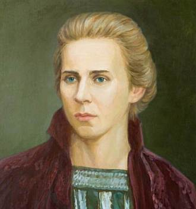

Письменники та цікаві факти про них

Тарас Григорович Шевченко
Тарас Шевченко був невисокого зросту – трохи більше 164 см.Улюбленим напоєм Тараса був чай із ромом.У 1975 році один із кратерів на Меркурії був названий на честь Тараса Григоровича Шевченка.1384 – стільки пам’ятників Тарасові Шевченку встановлено в світі. З них в Україні налічується 1256 монументів, і ще 128 – в 35 країнах світу — Бразилії, США, Китаї тощо. Перший пам’ятник Тарасові Шевченку встановили в 1881 році в місті Форт-Шевченко.

Лариса Петрівна Косач